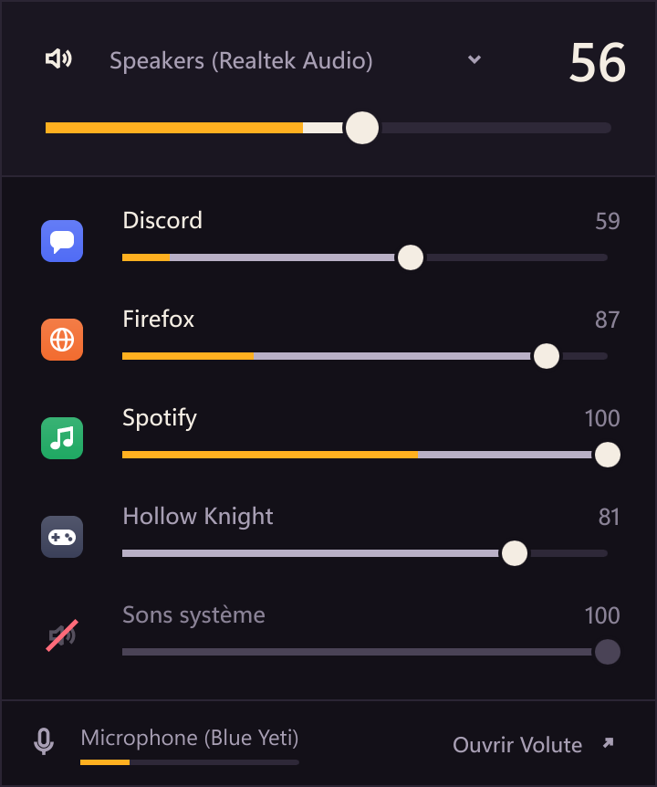
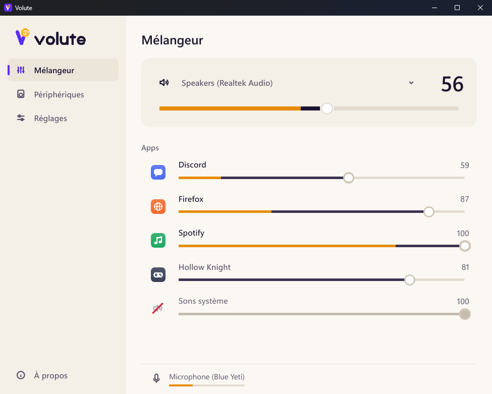

Chaque app, avec son niveau
Le vrai nom et l'icône de chaque app, son volume et ce qu'elle joue en direct. Les processus d'une même app ne font qu'une ligne.
Volute est un mélangeur de volume pour Windows. Le volume de chaque app, son niveau en direct, chaque sortie et chaque micro, à un clic de la zone de notification. Il se fait oublier le reste du temps.
Windows 10 et 11 · gratuit et open source (MIT) · sans droits administrateur

Essayez
Chaque app a sa ligne. Le fader règle son volume, le niveau ambré montre ce qu'elle joue, en direct, et un clic sur l'icône la coupe. Les sons système restent à part, et une app qui s'est tue s'efface au bout d'une minute.
Faites glisser, ou utilisez les flèches du clavier. Cliquez une icône pour couper le son.
Ce que Windows ne fait pas
Celui de Windows est à quatre clics, n'affiche aucun niveau et oublie vos apps. Volute vit dans la zone de notification et va droit au but.
Le vrai nom et l'icône de chaque app, son volume et ce qu'elle joue en direct. Les processus d'une même app ne font qu'une ligne.
Casque, enceintes, écran : la sortie se choisit en haut du mélangeur, et Volute la définit par défaut pour tout Windows.
Le volume que vous donnez à une app dans Volute revient la prochaine fois qu'elle joue. La molette sur l'icône règle le volume général.

Ce qu'il coûte
Rust et Slint, sans navigateur embarqué ni environnement à installer. Volute dort tant que rien ne bouge : Windows le réveille quand un volume change.
Mesuré avec cargo xtask bench-overhead sur la machine de l'auteur. Mélangeur ouvert, avec les niveaux qui bougent : 2 à 4 % d'un cœur. Les chiffres et la méthode sont dans le document d'architecture.
Ce qu'il lit
Un mélangeur voit passer beaucoup de choses. Voici exactement ce que Volute en fait.
Ensuite
Volute est jeune. Le mélangeur est là ; voici la suite, dans l'ordre.
Volute les prend en charge, avec son propre affichage à l'écran, lisible et animé. Une touche de modification règle l'app au premier plan.
Des ensembles de volumes et de sorties, appliqués en un clic ou un raccourci : « Travail », « Jeu », « Appel ».
La musique dans les enceintes, l'appel dans le casque, sans passer par les Paramètres.
Questions
Oui, et open source sous licence MIT. Pas de version payante, pas de compte, pas de publicité.
Non. Volute s'installe dans votre dossier utilisateur et tout ce qu'il fait marche avec les droits d'un compte standard : volumes des apps et des périphériques, sortie par défaut.
Volute regarde sur GitHub au démarrage puis toutes les 6 heures. Quand une version sort, il vous le dit ; un clic la télécharge, vérifie son empreinte SHA-256 et l'installe sans fenêtre, puis Volute redémarre. Vous pouvez couper cette vérification dans les Réglages.
Les exécutables ne sont pas encore signés, donc SmartScreen peut prévenir au premier lancement. Le fichier SHA256SUMS de chaque version permet de vérifier ce que vous avez téléchargé.
Windows ne mesure le niveau d'un micro que lorsqu'une app l'utilise. Volute n'ouvre jamais le micro lui-même, pour ne pas allumer l'indicateur « micro utilisé » de Windows sans raison.
Depuis les Paramètres de Windows, Applications, comme n'importe quelle app. Vos réglages restent dans %APPDATA%\Volute ; supprimez ce dossier pour les effacer aussi.
Installez Volute pour votre compte, en quelques secondes. Il se met à jour tout seul.
Installateur ou version portable · Windows 10 et 11, 64 bits